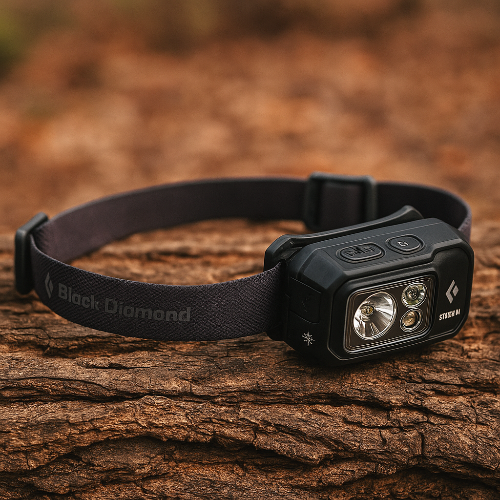
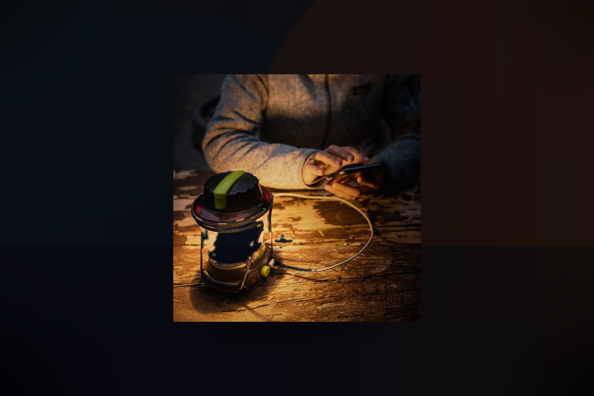
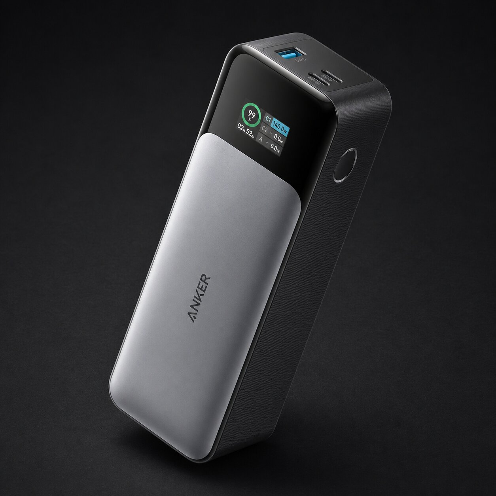
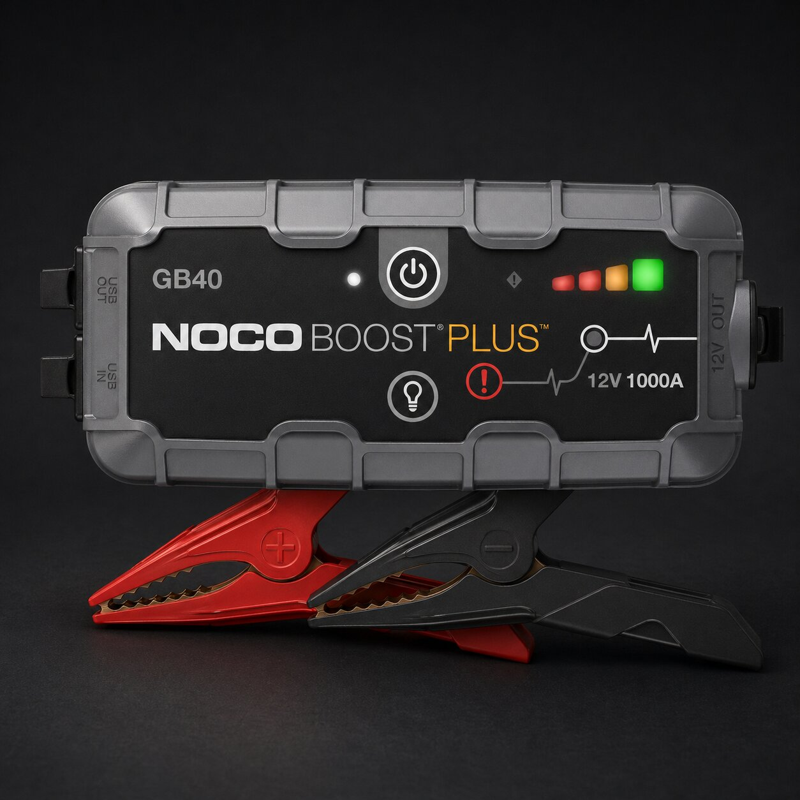
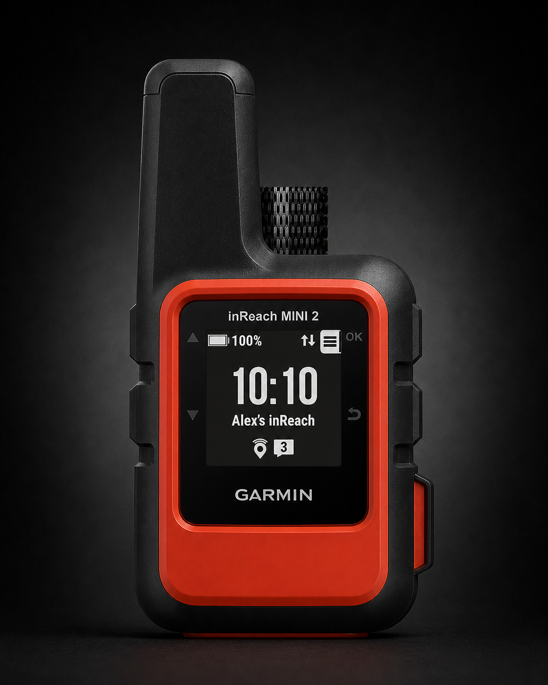

WORK
Put light where your eyes are looking
A headlamp is the first night tool because it follows your hands: stove work, tent fixes, bathroom walks, truck checks, and sorting gear without holding a flashlight in your teeth.
 By Chris Follin
By Chris FollinGUIDE
A lot of camp problems do not show up until the sun is gone. That is when bad light, drained devices, weak truck batteries, and clumsy setup choices start making everything take longer than it should. These are the pieces that keep the evening usable instead of chaotic.
I want camp light that helps me cook, sort gear, and walk around without turning every task into a flashlight act. I also want enough backup power and safety margin that a dead phone, weak vehicle battery, or late return does not become the whole story.
After dark gear should map to where the light or backup is needed. One thing on your head, one thing for the table, and one boring backup layer solve most of the nighttime friction.
WORK
A headlamp is the first night tool because it follows your hands: stove work, tent fixes, bathroom walks, truck checks, and sorting gear without holding a flashlight in your teeth.
GATHER
A lantern makes the kitchen, card table, and gear pile visible to everyone. It should dim smoothly and point light where people work, not blast faces across camp.
RECOVER
Power banks, jump starters, and satellite messengers are not glamorous, but they turn dead electronics, weak batteries, and no-service travel into manageable problems.

Rechargeable headlamp for weather, dark trails, night setup, and camp chores where hands-free light has to work.

Adjustable table lantern for cooking, sorting, eating, and keeping glare out of everyone's eyes.

High-output bag battery for cameras, phones, laptops, and small USB gear before the problem becomes vehicle power.

Truck battery insurance for the exact problem that feels much bigger when it happens cold, late, or far from help.

The remote-trip safety margin for late hikes, no-service roads, and situations where a phone is not a plan.
Most night frustration is not dramatic. It is repeated tiny friction: bad light angle, one hand occupied by a flashlight, a phone battery you were counting on, or suddenly remembering that a weak vehicle battery becomes a much bigger problem once everything is dark and cold.
START HERE
A good headlamp fixes more practical problems than almost anything else after dark. Hands-free light makes cooking, setup, bathroom walks, and truck checks instantly easier.
THEN THIS
The lantern is what makes the table usable and the site feel settled. It lets more than one person cook, eat, clean up, or sort gear without everyone chasing one beam.
AFTER THAT
The jump starter and satellite messenger are boring until the hour gets awkward. I like after-dark gear that quietly prevents a bigger story.
Night gear can get silly fast. More lumens, more lanterns, and more emergency gadgets do not automatically make camp safer or easier.
TOO BRIGHT
A camp light should dim and aim well. If it blinds everyone, kills night vision, or makes the table feel like a worksite, it is the wrong kind of bright.
TOO MANY
One headlamp per person and one real lantern usually beats five random lights nobody remembered to charge. Fewer lights are easier to maintain.
UNTESTED
A jump starter, satellite messenger, or power bank should be charged, tested, and stored where you can reach it in the dark. Otherwise it is just confidence theater.